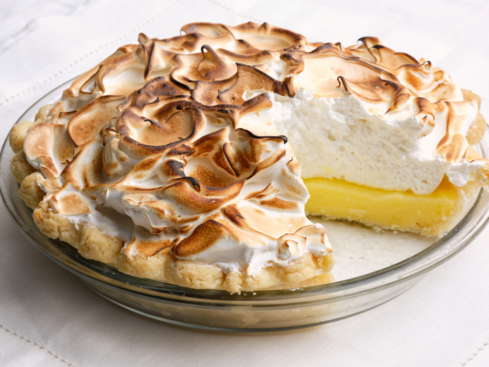

| 
Original recipe page
|
Ingredients
Pie Crust
- 1 1/4 cups all-purpose flour, plus more for dusting
- 2 tablespoons cold vegetable shortening
- 1 teaspoon sugar
- 1/2 teaspoon fine salt
- 1/2 teaspoon apple cider vinegar
- 6 tablespoons very cold unsalted butter, cut into small pieces
- 3 to 6 tablespoons ice water
Filling
- 1 cup sugar
- 5 tablespoons cornstarch
- 1/2 teaspoon fine salt
- 1/2 cup fresh lemon juice plus 2 teaspoons gently packed lemon zest
- 4 large egg yolks
- 3 tablespoons unsalted butter, cut into small pieces
Meringue
- 5 large egg whites
- 3/4 cup sugar
- 1/4 teaspoon cream of tartar
- Pinch fine salt
- 1/2 teaspoon pure vanilla extract
Instructions
- For the pie crust: Pulse the flour, shortening, sugar, salt and vinegar in a food processor until the mixture looks like damp sand, about 10 pulses. Add the butter and pulse until you can still see large pea-sized pieces. Sprinkle in 3 tablespoons ice water and pulse until the dough begins to come together. Pinch the dough; if it doesn't hold together, add up to 3 more tablespoons ice water, 1 tablespoon at a time, until the dough holds together when pinched. Lay out a sheet of plastic wrap and dump the dough onto the plastic. Using the edges of the plastic, press the dough into a disc. Wrap tightly and refrigerate until firm, at least 1 hour and preferably overnight. (Freeze up to 2 months.)
- On a lightly floured work surface, roll the dough out into a 13-inch round. Place in a 9-inch pie dish, gently pressing the dough into the edges and letting the excess dough drape over the sides. Refrigerate for 2 hours.
- Preheat the oven to 375 degrees F.
- Trim any excess dough with a paring knife and crimp the edges decoratively or press them down with the tines of a fork. Prick the dough on the bottom all over with a fork. Place a sheet of parchment paper inside the dough and fill with pie weights or uncooked rice or beans. Bake for 10 minutes. Carefully remove the parchment and weights and bake until the crust is deep golden brown on the edges and lightly golden in the center, 10 to 12 minutes more. Let the crust cool to room temperature.
- For the filling: Whisk together the sugar, cornstarch and salt in a medium saucepan. Add the lemon juice and 1 1/2 cups water and whisk to combine. Whisk the egg yolks in a separate medium bowl. Place the sugar mixture over medium heat and cook, continuing to gently whisk, until the mixture begins to bubble and is extremely thick. Temper the eggs yolks by slowly adding half of the hot sugar mixture to the yolks while constantly whisking. Add the tempered yolks to the saucepan and return to the heat. Bring the mixture back to a simmer and cook, stirring constantly with a rubber spatula, for 1 minute. Remove from the heat and stir in the butter and lemon zest until completely melted and incorporated. Pour the filling directly into the pie crust and cover with plastic wrap pressed directly against the surface of the filling (see Cook's Note). Refrigerate while you make the meringue.
- For the meringue: Add the egg whites to the bowl of a stand mixer fitted with the whisk attachment along with the sugar, cream of tartar and salt. Whisk together to combine. Place the bowl over a saucepan of simmering water, making sure the bottom of the bowl is not touching the water. Cook, whisking constantly, until the sugar is dissolved and the mixture feels hot to the touch. Transfer the bowl to the mixer and add the vanilla. Whisk on medium-high speed until stiff peaks form, 5 to 6 minutes.
- Remove the plastic wrap from the pie and gently mound the meringue on top of the filling. Use an offset spatula to make sure the meringue completely covers the filling and meets the crust all around the edges. (This will seal in the filling and help prevent weeping.) Use the offset spatula to create swirls and peaks in the meringue. Toast the meringue using a kitchen torch or broil in the oven until golden brown, keeping an eye on the meringue if broiling, 1 to 2 minutes. Refrigerate the pie until the filling is completely cool and set, about 4 hours.
|